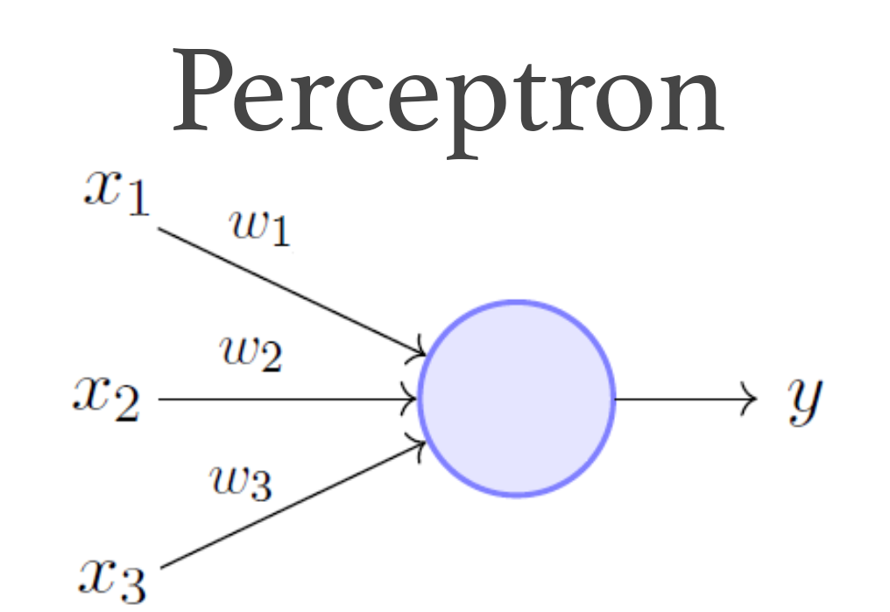

Neural Networks - Perceptron |
||||||||
|
||||||||
The PerceptronA perceptron is one of the simplest forms of a neural network, primarily used for binary classification tasks, invented in 1957 by Frank Rosenblatt. It functions by taking multiple input values, each multiplied by a weight, and sums these products together.
\( \text{output} = f\left(\sum_{i=1}^{n} w_i \cdot x_i + b\right) \)
In the simulation above, the perceptron's mission is to sort random points into two classes, those above the red line and those below the red line. If the perceptron classifies the point correctly, the point color will be green if it is above the red line, and blue if it is below. If it is classified incorrectly, the point color will be red. Initially, the perceptron does not know how to categorize points. It doesn't have the equation of the line. So it guesses. Its learning is supervised. It has a training data set, and each point knows where it should be classified. If the perceptron guesses wrong, the trainer provides error information and the perceptron makes correction adjustments to its internal weights so that it will make a better guess next time. The cyan line shows where the perceptron thinks the line is based on the training data and its adjusted weights. Hit the Reload button to watch it move into place as it trains. Over time, its weight adjustments essentially find where the line is and it will be able to classify points correctly. You can watch the weights change as the training progresses. Training the PerceptronThe training process involves adjusting the weights and bias to minimize errors on the training data. This is done by updating the weights for every iteration based on the difference between the expected and actual outputs. Notice that the change is dampened by \( \eta \), the learning rate. If \( \eta \) is large, the weights will be adjust faster, but they won't converge as well. If \( \eta \) is very small, the weights will converge better, but it will take a longer time to train:
\( w_i = w_i + \Delta w_i \)
\( \Delta w_i = \eta (y - \hat{y}) x_i \)
LimitationsThe perceptron can only solve problems that are linearly separable. It struggles with non-linear problems, such as the XOR problem. This limitation led to the development of multi-layer perceptrons (MLP) and the backpropagation algorithm, which can model complex, non-linear decision boundaries. MLP will be the focus of my next project.  |